Olá, eu sou o Juan Gonsalves
_
Estudante de Engenharia Informática. Apaixonado por tecnologia e resolução de problemas, em busca da minha primeira oportunidade em desenvolvimento de software.
Estudante de Engenharia Informática. Apaixonado por tecnologia e resolução de problemas, em busca da minha primeira oportunidade em desenvolvimento de software.
Sou um estudante de Engenharia Informática com background em serviço ao cliente e gestão de eventos. Habituado a ambientes dinâmicos e de alta pressão, trago essa mesma capacidade de adaptação e resolução rápida de problemas para o mundo do código. À procura da minha primeira oportunidade em desenvolvimento de software.
2024 - Presente
Foco em programação, bases de dados, arquiteturas de software e usabilidade.
Ciências Socioeconómicas
2021 - 2024
Média: 17,1
[Linguagens]
>_ Python, Java, C/C++, JS, Bash
[Web & DB]
>_ HTML, CSS, SQL, MongoDB
[Frameworks & Tools]
>_ Linux Ubuntu, Git, Spring Boot, JUnit
Secundário
Licenciatura (2º Ano)
Mestrado
Sempre gostei de videojogos. É o meu formato preferido para descontrair no fim do dia e divertir-me com amigos em jogos competitivos e cooperativos.
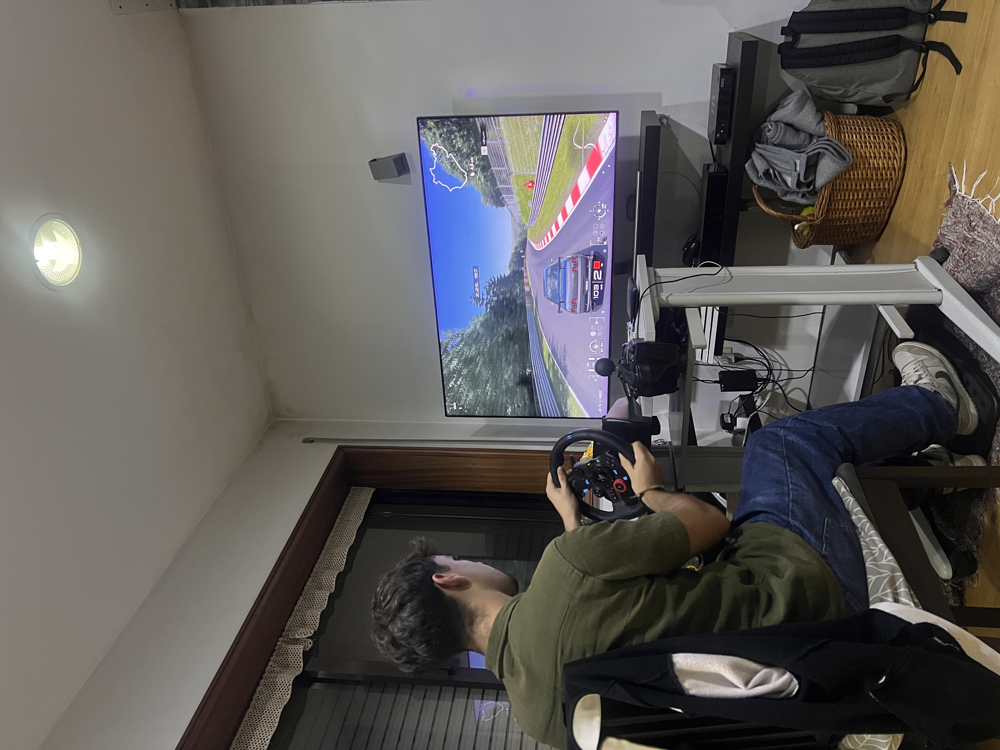
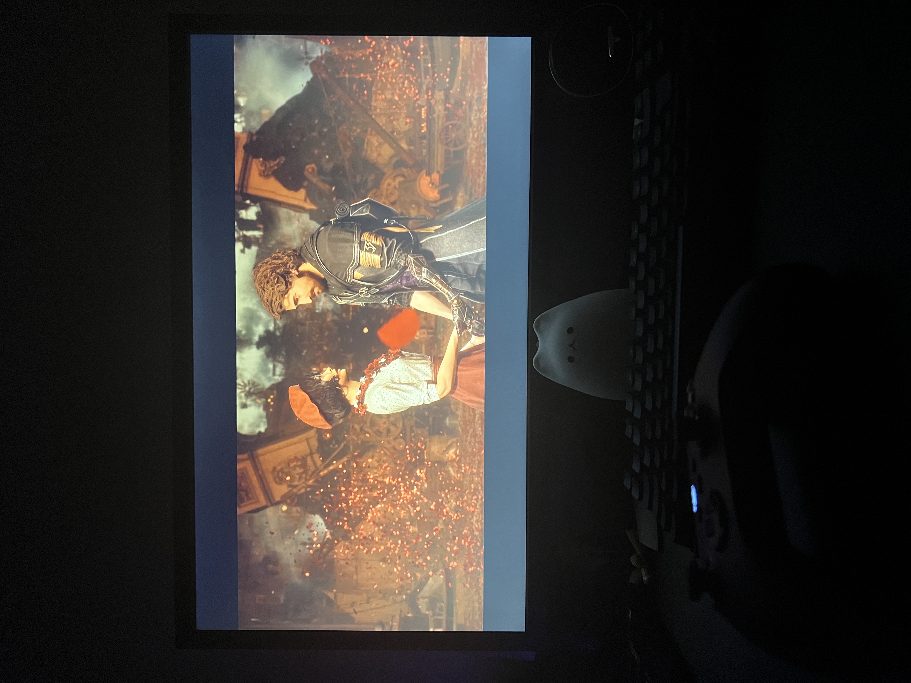
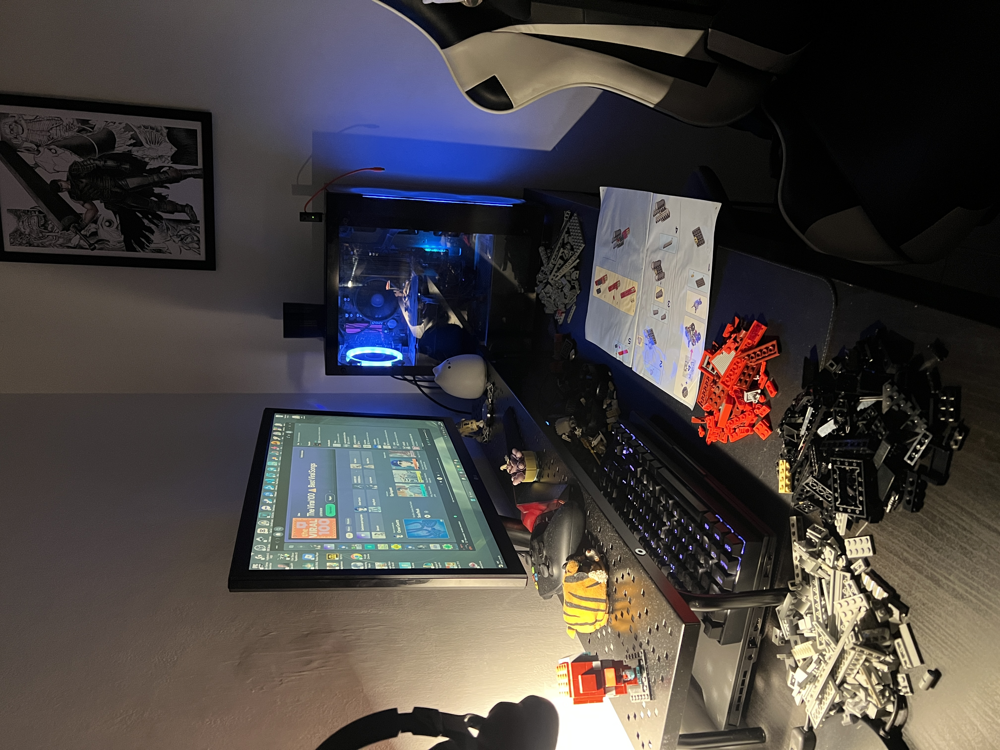
O ginásio faz parte da minha rotina. É o espaço onde desligo um pouco dos ecrãs, cuido da saúde física e mantenho o corpo ativo.
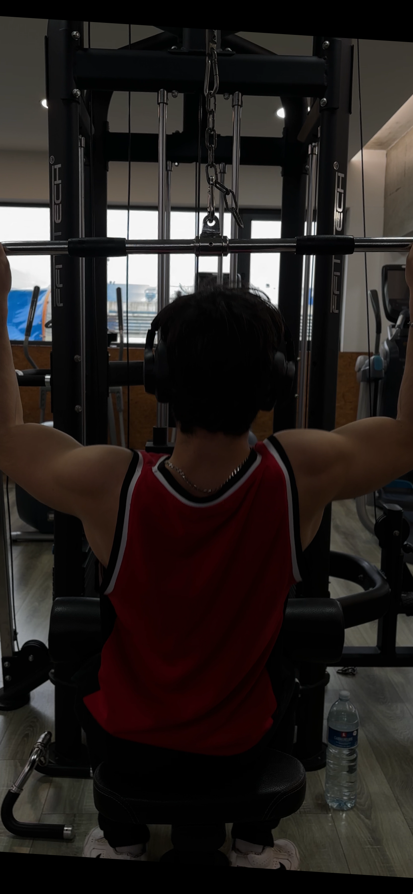
Gosto bastante de acompanhar anime e ler manga. Aprecio a arte visual japonesa e é uma ótima forma de entretenimento para relaxar.


Tenho um interesse genuíno por computadores e software. Gosto de explorar ferramentas novas e perceber como as coisas são montadas por trás dos bastidores.

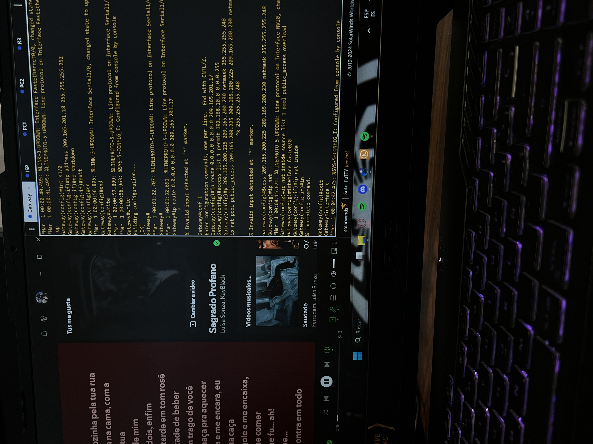
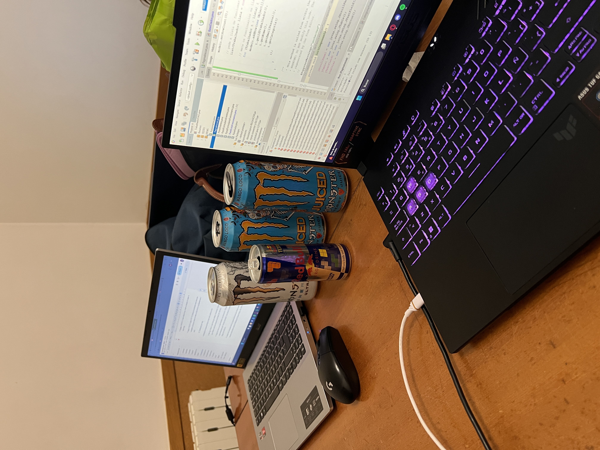
Sempre tive um grande fascínio por motas. Gosto imenso da sensação de liberdade e de conduzir. A minha companheira atual é uma Yamaha R6 do 2000, com a qual também aprendo bastante sobre mecânica.
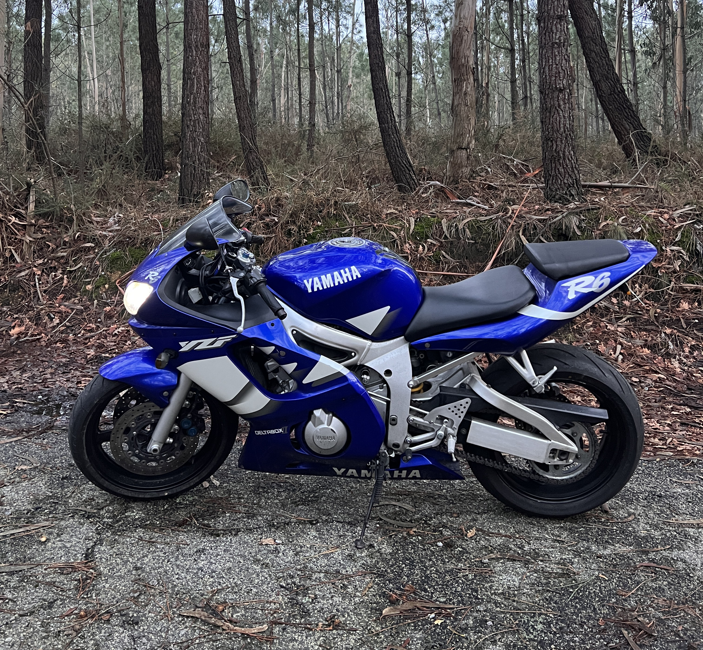
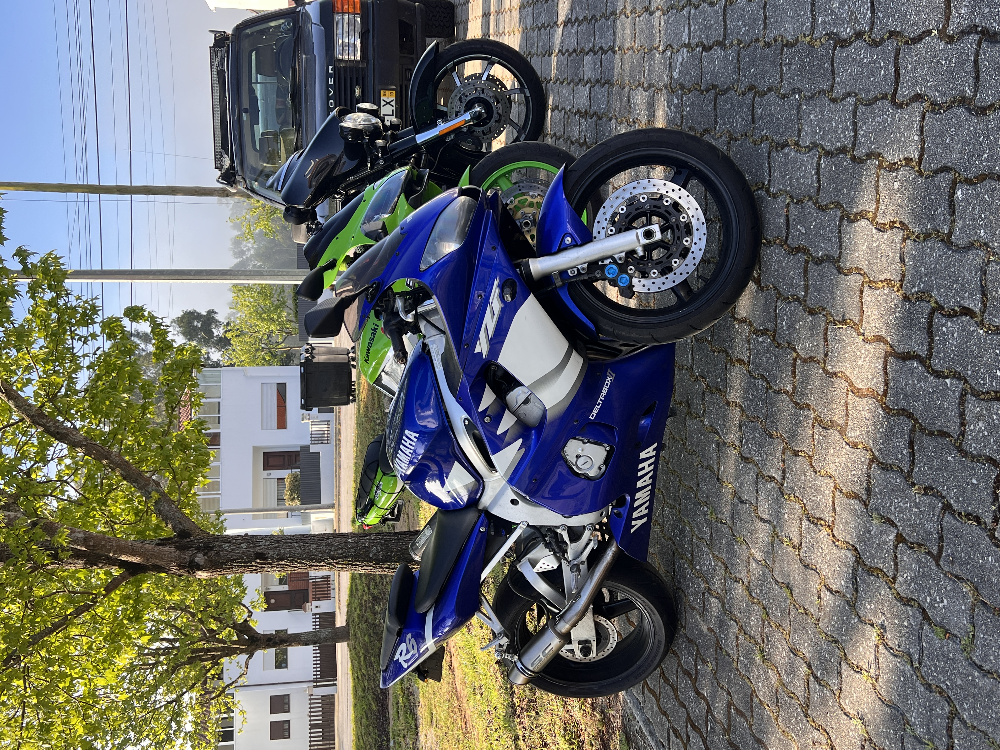

Esta é a Sasha, a minha gata e a verdadeira dona da casa. Passa a maior parte do tempo a dormir por perto enquanto estou no computador.


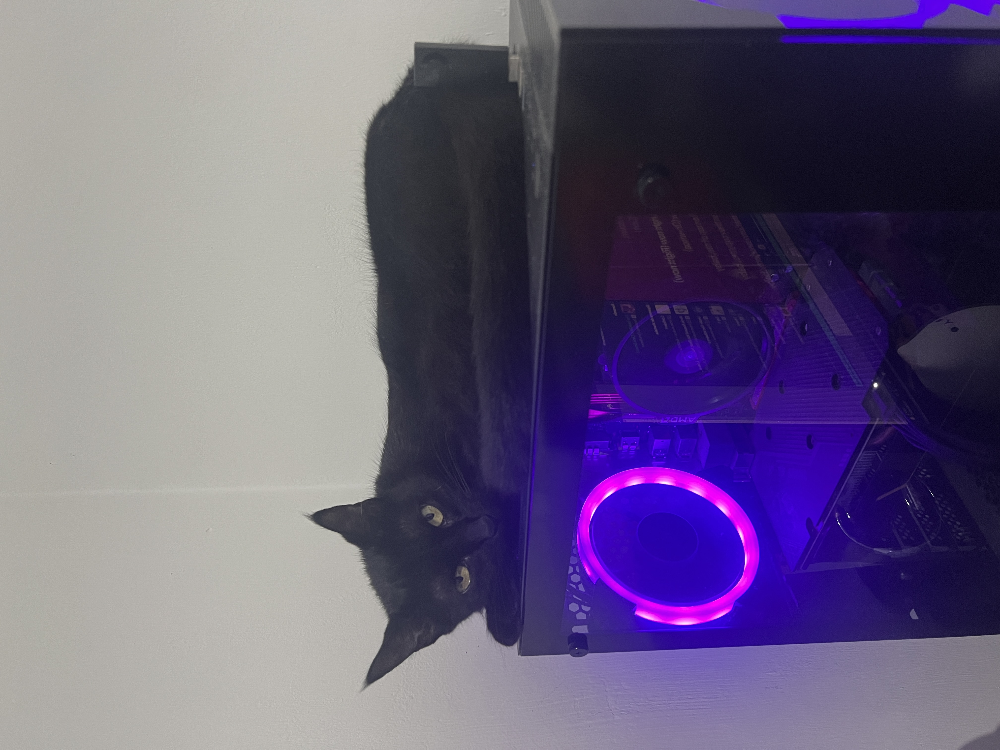
E este é o Félix, o meu outro gato! Amarelo, branco, super peludo e com uns olhos verdes inconfundíveis. É o mestre em espalhar pelo pela casa toda.
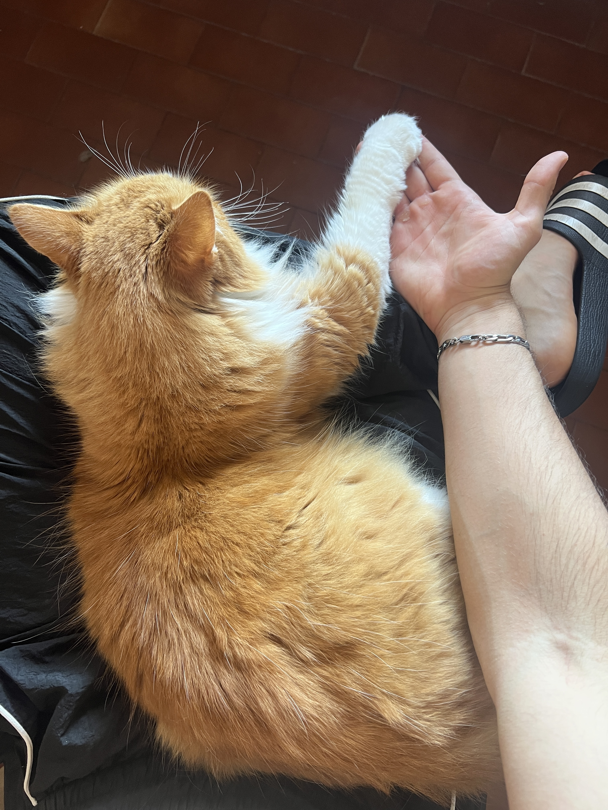
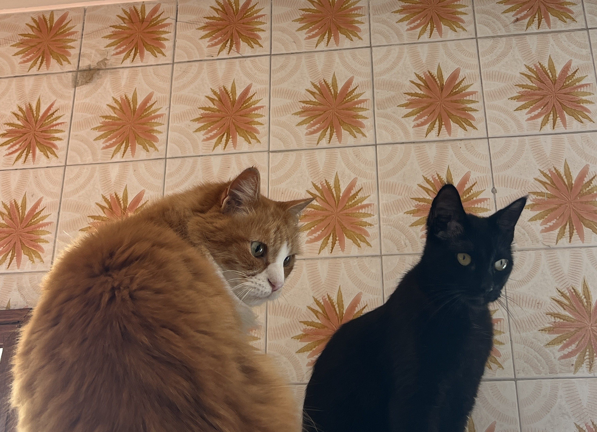
Restaurante Gran Sabana
Rebel Island 2025
Vários organizadores
CV Transferido - 50G